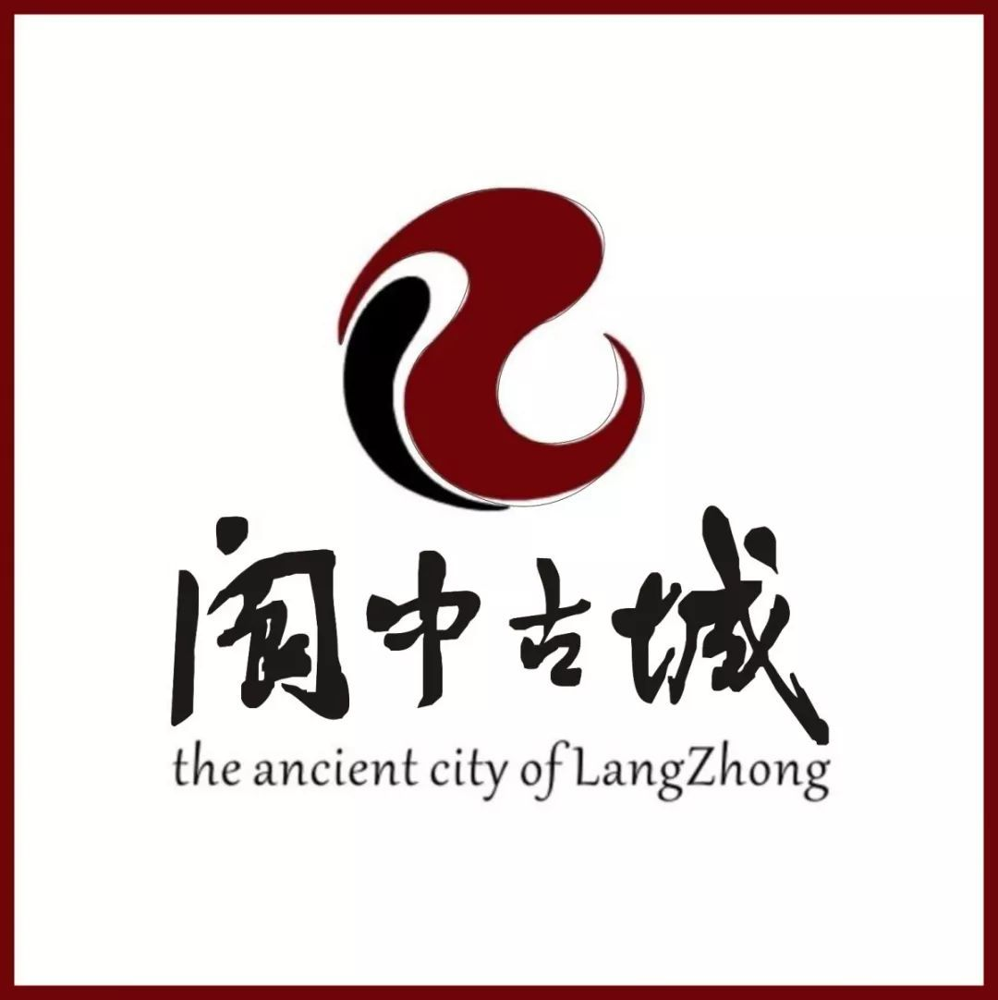

简称"川"或"蜀"，省会成都，位于中国大陆西南腹地，自古就有"天府之国"之美誉，是中国西部门户，大熊猫故乡。四川今与重庆、贵州、云南、西藏、青海、甘肃、陕西诸省市交界。四川东部为川东平行岭谷和川中丘陵，中部为成都平原，西部为川西高原。 |
四川八大历史文明城
|
| 成都市,简称“蓉”,别称蓉城、锦城,四川省辖地级市,省会、副省级市、超大城市、国家中心城市、世界美食之都。 |
|  |
|
| 阆中市，四川省辖县级市，由南充市代管，古称保宁，地处四川盆地北缘，位于嘉陵江中上游，秦巴山南麓，山围四面，水绕三方。 |
|
| 宜宾，文化底蕴深厚。有2200多年建城史，3000多年种茶史，4000多年酿酒史，是国家历史文化名城。 |
|
| 川南区域中心城市，成渝经济圈南部中心城市，享"千年盐都"，"恐龙之乡"，"南国灯城"，"美食之府"之美誉。 |
|
| 乐山是国家历史文化名城、国家园林城市、国家智慧城市试点市、国家水生态文明建设试点市，是成渝城市群规划的成都平原区域中心城市之一。 |
|
| 都江堰市位于成都平原西北边缘岷江出山口处，因世界著名水利工程都江堰和中国道教发祥地青城山而久已名闻遐迩。 |
|
| 泸州是国家历史文化名城，具有两千多年历史文化；西汉设江阳侯国；梁武帝大同年间建置泸州 |
|
| 会理县位于四川省最南端，地处攀西腹心地带，因“川原并会，政平颂理”而得名，古称会无、会川。 |